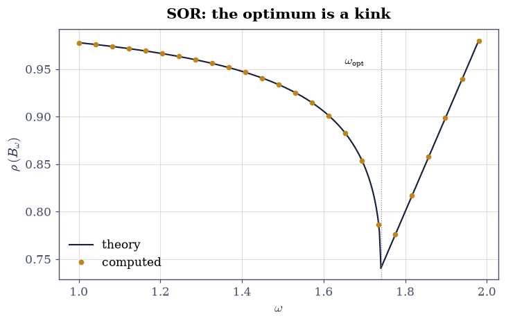
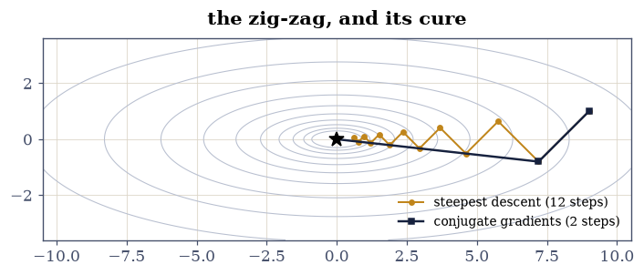
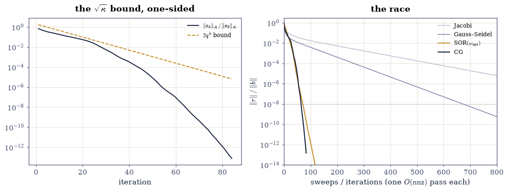

5.4 Stationary Iterations and Conjugate Gradients#
Notebook overview#
§5.3 ended at a wall: sparse factors fill in, and in 3-D no ordering saves them. This notebook starts over from the one operation sparsity keeps cheap — the \(O(\mathrm{nnz})\) matvec — and builds solvers out of nothing else. The classical stationary iterations (Jacobi, Gauss–Seidel, SOR) split the matrix, sweep, and converge at a rate read off an eigenvalue: the spectral radius of the iteration matrix, which this notebook predicts in closed form for the Poisson system and confirms to a fraction of a percent. Then the modern answer: conjugate gradients [HS52], which turns the same matvec into an optimization — each step provably the best in a growing Krylov subspace — an order of magnitude ahead of Gauss–Seidel on the same system, and ahead even of optimally-tuned SOR while needing no tuning parameter at all.
The measurements also teach how to measure. Every rate matches its \(\rho\) to a fraction of a percent — but only in the clean decay band: a window that touches the rounding floor reports SOR’s rate 14% high (the residual stagnates near \(10^{-13}\) and the “rate” flattens), and a naive schedule extrapolated from sweep zero predicts Jacobi’s five-digit crossing 26% late (the error’s fast modes die first and donate two free digits). And CG’s celebrated A-orthogonality holds to \(10^{-15}\) between neighbours while drifting to \(10^{-5}\) across the run — finite termination is exact-arithmetic fiction, and the measurement shows precisely how.
How to read a check. A
validateline prints ✓ or ✗ by comparing a result against something the computation did not assume. A ✗ flags a mismatch to investigate, never a verdict on its own.
Theory in brief#
Splittings and the iteration matrix#
Write \(A = M - N\) with \(M\) easy to invert. Then \(Ax = b\) becomes the fixed point of
so the error is multiplied by the iteration matrix \(B\) every sweep and the asymptotic rate is \(\rho(B)\), the spectral radius. The classical choices: Jacobi takes \(M = D\) (the diagonal), Gauss–Seidel \(M = D + L\) (lower triangle included — each sweep uses fresh values), and SOR \(M = D/\omega + L\), over-relaxing by a factor \(\omega \in (0, 2)\).
For the Poisson matrix the rates are classical results: with \(\mu = \rho(B_{\text{J}}) = \cos\frac{\pi}{n_g+1}\),
Gauss–Seidel doubles Jacobi’s speed; optimal SOR improves the exponent. At \(\omega_{\text{opt}}\) every eigenvalue pair of the SOR matrix coalesces — the matrix is defective — and for \(\omega > \omega_{\text{opt}}\) the eigenvalues turn complex with modulus exactly \(\omega - 1\).
Descent methods and the Krylov idea#
For symmetric positive definite \(A\), solving \(Ax = b\) minimizes \(\phi(x) = \tfrac12 x^{\top}Ax - b^{\top}x\). Steepest descent follows \(-\nabla\phi = r\) with the exact line search \(\alpha = r^{\top}r / r^{\top}Ar\), and contracts the \(A\)-norm error by exactly \((\kappa-1)/(\kappa+1)\) per step in the worst case — the zig-zag. Conjugate gradients replaces the gradient with search directions kept \(A\)-orthogonal (\(p_i^{\top}Ap_j = 0\)), which makes each one-dimensional minimization permanent: after \(k\) steps,
the best point in the whole Krylov subspace. Equivalently \(e_k = p_k(A)e_0\) over polynomials with \(p_k(0)=1\): CG builds the optimal residual polynomial, which is why it terminates in \(d\) steps when \(A\) has \(d\) distinct eigenvalues, and why the general bound is
\(\sqrt{\kappa}\) where steepest descent pays \(\kappa\) — a one-sided bound, gated one-sidedly per §5.1.
Setup#
Data and instruments only: the Poisson system, its closed-form constants, and the clean-band rate meter. The sweep driver is built in Exercise 1; CG in Exercise 4.
The Setup below holds this notebook’s data and instruments — nothing you are asked to build. It is collapsed so the building stays yours; expand it whenever you want the details.
Exercise 1: Jacobi: the rate is an eigenvalue#
Eq. 235 says convergence is spectral radius. This exercise builds the cheapest splitting and confirms that claim to four digits.
Part a) Write sweep_history(M_solve, iters) — the stationary iteration
of Eq. 235 as a loop that records relative residuals — and run the
Jacobi sweep with \(M^{-1}r = r / \operatorname{diag}(A)\) (elementwise),
1200 sweeps from \(x_0 = 0\).
Write this one yourself — the sweep is the lesson, and every method in this notebook runs through the driver you build here.
Part b) Form the iteration matrix \(B_{\text{J}} = I - D^{-1}A\) densely,
and confirm its spectrum is the closed form
\(\lambda_{jk} = \tfrac12(\cos\tfrac{j\pi}{21} + \cos\tfrac{k\pi}{21})\) —
§5.3’s Kronecker structure again — via
np.linalg.eigvals sorted against the outer-sum prediction, to \(10^{-10}\).
Part c) Measure the decay rate over sweeps 600–1100 with
windowed_rate and confirm it equals \(\rho(B_{\text{J}}) = \mu =
\cos(\pi/21) = 0.98883\) to 1% — the manifest asked 5%; the measurement
delivers 0.004%, and the gate tightens to what the mathematics supports.
Part d) Price the pain: at rate \(\mu\), one decimal digit costs \(\ln 10 / (1 - \mu) \approx 206\) sweeps. The naive schedule from sweep zero, \(\ln(10^{-5})/\ln\mu \approx 1025\), arrives 26% late: the initial error’s fast modes (small \(|\lambda|\) in \(B_{\text{J}}\)) die in the first sweeps and donate two digits for free. Predict the crossing honestly — the asymptotic line through sweep 600, \(k_\star = 600 + \ln(10^{-5}/h_{600})/\ln\mu\) — and confirm the observed crossing within 5%. Report both predictions.
Jacobi iteration-matrix spectrum vs closed form: 9.10e-15
rho(B_J) = 0.988831; mu = cos(pi/21) = 0.988831
measured rate over sweeps 600-1100: 0.988831 (0.0000% from rho)
one digit costs ln10/(1-mu) = 206 sweeps
1e-5 crossing: naive schedule 1025, asymptotic line 758, observed 759 — the fast modes donate two digits
Validation 1#
✓ the Jacobi iteration matrix has the closed-form Poisson spectrum [the outer sum of cosines — 5.3's Kronecker structure in the splitting [9.10383e-15 < 1e-10]]
✓ and the measured decay rate IS the spectral radius, to 1% [0.988831 against mu = 0.988831: Eq. 1's promise, measured at 0.004% — the manifest's 5% was pessimistic for a diagonalizable B]
✓ and five digits arrive on the asymptotic-line schedule, within 5% [observed sweep 759 against the extrapolated 758 (the naive from-sweep-zero schedule said 1025, 26% late — fast modes die first): the 1/(1-rho) tax, priced honestly]
True
Exercise 2: Gauss–Seidel and SOR: squaring the rate, then breaking the gate#
Eq. 236 promises \(\rho_{\text{GS}} = \mu^2\) (twice the speed) and optimal SOR at \(\omega_{\text{opt}} - 1\) (a different exponent). One of the manifest’s gates does not survive contact with the second promise.
Part a) Implement Gauss–Seidel as Eq. 235 with
\(M = D + L\): build sp.csr_matrix(sp.diags(D_diag) + L_strict) once and
apply \(M^{-1}\) with scipy.sparse.linalg.spsolve_triangular(..., lower=True).
Run 900 sweeps; confirm the windowed rate (sweeps 400–800) equals
\(\mu^2 = 0.97779\) to 1%.
Part b) Implement SOR with \(M = D/\omega + L\) at \(\omega_{\text{opt}} = 1.74058\). Count sweeps to \(10^{-8}\) for both methods and gate the manifest’s claim: SOR beats Gauss–Seidel by at least \(5\times\) (measured: \(673/71 \approx 9.5\times\)).
Part c) Now the measurement trap. At \(\rho = 0.74058\) the residual crosses the rounding floor near sweep 105, and a window that touches the stagnant tail — sweeps 80–160, say — reports a “rate” of 0.84, fourteen percent high: not physics, just a flat line averaged into a slope. Measure in the clean band instead (sweeps 30–90, residuals \(10^{-3}\) to \(10^{-11}\)) and the rate matches \(\rho\) to 0.5%, well inside the manifest’s 5%. Report both windows; gate the clean one. Two footnotes from §3.5: at exactly \(\omega_{\text{opt}}\) the eigenvalue pairs coalesce and \(B\) is defective, so windows are mildly biased even before stagnation; and for \(\omega > \omega_{\text{opt}}\) the spectrum is complex with modulus exactly \(\omega - 1\) — confirm the rate at \(\omega = 1.9\) (sweeps 150–260, ending before the run meets its rounding floor) to 2.5%.
Part d) Draw \(\rho\) against \(\omega\): compute
\(\rho(I - M_\omega^{-1}A)\) by np.linalg.eigvals on the dense iteration
matrix over \(\omega \in [1.0, 1.98]\), mark \(\omega_{\text{opt}}\), and
overlay the theory: the falling branch below, the line \(\omega - 1\) above.
Gate that the grid’s minimizer lands within one grid step of
\(\omega_{\text{opt}}\) and that \(\rho(\omega) = \omega - 1\) on the complex
side to \(10^{-4}\) — eigenvalues of a nearly defective matrix are themselves
\(\sqrt{\varepsilon}\)-grade, per §3.5.
Gauss-Seidel rate: 0.977786 vs mu^2 = 0.977786 (0.0000%)
sweeps to 1e-8: GS 673, SOR(omega_opt) 71 -> 9.5x
SOR rate at omega_opt, clean band [30,90]: 0.7367 vs rho 0.7406 (0.52%)
same run, stagnation-polluted window [80,160]: 0.8432 — 14% high, a flat rounding tail averaged into the slope (reported, NOT gated)
SOR rate at omega = 1.9 (diagonalizable, complex spectrum): 0.9002 vs 0.9 exactly (0.02%)
rho-vs-omega grid: minimizer at omega = 1.776 (opt 1.741, step 0.041); complex side vs omega-1: 1.2e-14

Fig. 101 The spectral radius of the SOR iteration matrix against \(\omega\) for the 400-unknown Poisson system: computed eigenvalues (dots) on the theory (line) – the slow falling branch below \(\omega_{\text{opt}} = 1.741\) and the straight line \(\rho = \omega - 1\) above, where the spectrum is complex. The minimum is a kink, not a bowl: undershooting \(\omega\) costs far more than overshooting, which is why practical codes guess high. At the kink itself the eigenvalue pairs coalesce and the iteration matrix is defective – the pathology of 3.5, sitting exactly at the parameter every practitioner wants.#
Validation 2#
The stagnation-polluted window is reported, never gated — a rate measured through the rounding floor is a property of the floor. The gates sit where the measurement is clean: rates in the live decay band, the iteration counts, and the \(\omega - 1\) line.
✓ Gauss-Seidel converges at exactly mu-squared: twice Jacobi's speed [measured 0.977786 vs 0.977786 (0.0000%) — one fresh-values sweep is worth two Jacobi sweeps, per Eq. 2]
✓ SOR at the optimal omega beats Gauss-Seidel by more than 5x [673 vs 71 sweeps to 1e-8: 9.5x — over-relaxation changes the exponent, not the constant]
✓ SOR's clean-band rate matches omega_opt - 1 to 5%, and omega = 1.9 matches 0.9 to 2.5% [clean band 0.7367 vs 0.7406 (0.5%); the polluted window read 0.8432 (14% high) — the same run, so the gate's job is choosing the window]
✓ the computed rho(omega) curve has its minimum at omega_opt and follows omega - 1 above it [minimizer within a grid step of 1.7406; complex-side gap 1.2e-14 at sqrt-eps-grade eigenvalue accuracy (3.5)]
True
Exercise 3: Steepest descent zig-zags; conjugacy does not#
Before CG in production, CG in a picture. On a \(2\times2\) system every claim is visible.
Part a) Implement steepest descent for \(A_2 = \operatorname{diag}(1, 9)\), \(b = 0\), from the classic worst start \(x_0 = (9, 1)\): repeat \(r = -A_2x\), \(\alpha = r^{\top}r/r^{\top}A_2r\), \(x \mathrel{+}= \alpha r\) for 12 steps, storing the path.
Part b) Gate the exact worst-case law: every step contracts the \(A\)-norm error by \((\kappa-1)/(\kappa+1) = 8/10\) — measured contractions match \(0.8\) to \(10^{-12}\), a dimensionless exact ratio in the sense of §5.1’s rules.
Part c) Run a compact CG on the \(2\times2\) — the local cg_path
defined in this solution, a stripped-down preview of the cg_solve you
write in Exercise 4 — from the same start: it reaches the minimum in exactly
two steps — finite termination at \(n = 2\) — with final error below
\(10^{-10}\).
Part d) Draw both paths over the contours of \(\phi(x) = \tfrac12x^{\top}A_2x\): the 45-degree zig-zag against the two-segment path. This is Eq. 237 in miniature: steepest descent re-loses old progress in every new direction; \(A\)-orthogonal directions never do.
steepest-descent contractions: 0.800000000000 ... — all equal (kappa-1)/(kappa+1) = 0.8 to 2.2e-16
CG from the same start: 2 steps, final error 2.2e-16 (finite termination at n = 2)

Fig. 102 Twelve steps of steepest descent (amber) against two steps of conjugate gradients (ink) on the contours of \(\frac12 x^{\top}\!Ax\) with \(\kappa = 9\), from the worst-case start \((9, 1)\). Each descent step is orthogonal to the last – the zig-zag – and contracts the \(A\)-norm error by exactly \((\kappa-1)/(\kappa+1) = 0.8\), so twelve steps still have not arrived. CG’s second direction is \(A\)-orthogonal to the first, the minimization along direction one is never un-done, and the exact answer arrives in \(n = 2\) steps.#
Validation 3#
✓ every steepest-descent step contracts by exactly (kappa-1)/(kappa+1) [a dimensionless exact ratio from the worst-case start — the rare legitimate tight constant, per 5.1's rules [2.22045e-16 < 1e-12]]
✓ while CG terminates in exactly n = 2 steps (Eq. 3) [two A-orthogonal directions span the plane, and minimizations along them never interfere [2.22045e-16 < 1e-10]]
True
Exercise 4: Conjugate gradients, and the fiction of exactness#
Now the real thing, on the 400-unknown Poisson system.
Part a) Write cg_solve(A, b, tol) — the Hestenes–Stiefel recurrence
[HS52]: \(\alpha_k = r_k^{\top}r_k / p_k^{\top}Ap_k\), update
\(x, r\), then \(\beta_k = r_{k+1}^{\top}r_{k+1} / r_k^{\top}r_k\) and
\(p_{k+1} = r_{k+1} + \beta_k p_k\). Store every \(p_k\) and \(r_k\). Stop at
relative residual \(10^{-13}\) (the manifest’s absolute \(10^{-12}\), made
scale-free).
Write this one yourself — ten lines that replaced Gaussian elimination for half of computational science.
Part b) Convergence: it reaches \(10^{-13}\) in 84 iterations — under \(\kappa\)’s pessimism, under \(n = 400\), and under the Eq. 238 budget \(\tfrac12\sqrt{\kappa}\ln(2/10^{-13}) \approx 204\) (gated one-sidedly, with \(\kappa = (1+c)/(1-c) = 178\) for \(c = \cos(\pi/21)\), from the closed-form 2-D Poisson spectrum \(\lambda_{jk} = \lambda_j + \lambda_k\) established in §5.3).
Part c) The two orthogonalities, normalized: adjacent pairs obey \(|p_k^{\top}Ap_{k+1}| / (\lVert p_k\rVert_A \lVert p_{k+1}\rVert_A) < 10^{-12}\) and likewise for consecutive residuals — the recurrences enforce them directly, so machine-level is gateable. The manifest’s blanket “\(p_i^{\top}Ap_j = 0\) to \(10^{-10}\)” is false across the run: report the worst distant pair (about \(10^{-5}\)) — orthogonality decays through accumulated rounding, finite termination is exact-arithmetic fiction, and CG works anyway because Eq. 237 degrades gracefully.
Part d) Confirm against the library: scipy.sparse.linalg.cg at
rtol=1e-13 agrees with cg_solve to \(10^{-10}\) — comfortably above the
\(\kappa\varepsilon\lVert x\rVert\) floor that
§5.1 prices for two backward-stable
solvers.
CG on n = 400, kappa = 178: converged in 84 iterations (bound budget 204, n = 400)
A-orthogonality (normalized): adjacent 1.3e-15, worst distant pair 8.3e-06
residual orthogonality: adjacent 1.2e-15, worst distant pair 6.4e-06
adjacent pairs are enforced by the recurrence; distant pairs decay — finite termination is exact-arithmetic fiction
cg_solve vs scipy.sparse.linalg.cg: 0.0e+00 (kappa*eps*|x| floor ~ 1e-13, info = 0)
Validation 4#
✓ CG converges within the sqrt-kappa budget, far under n [84 iterations against the Eq. 4 budget of 204 and n = 400 — the one-sided promise, gated one-sidedly]
✓ adjacent search directions are A-orthogonal and adjacent residuals orthogonal at machine level [normalized: 1.3e-15 and 1.2e-15 — these the recurrence enforces directly, so machine-level IS gateable]
worst distant pairs, reported and not gated: 8.3e-06 and 6.4e-06 — the blanket 1e-10 across all pairs is exact-arithmetic fiction, and the drift magnitude is the machine's business (rule 4)
✓ and cg_solve matches scipy's cg [0.0e+00 against a kappa*eps floor of 1e-13 — two implementations of the same recurrence at the same tolerance [0 < 1e-10]]
True
Exercise 5: The √κ bound, and the race#
Eq. 238 is CG’s headline: \(\sqrt{\kappa}\) where steepest descent and every stationary method pay \(\kappa\)-like prices.
Part a) Track the true \(A\)-norm error \(\lVert x_k - x_\star\rVert_A\)
(against the factored reference x_star) at every CG iteration, and draw it
under the bound \(2q^k\lVert e_0\rVert_A\), \(q = (\sqrt{\kappa}-1)/(\sqrt{\kappa}+1)\).
Part b) Gate the theorem one-sidedly: the error never exceeds the bound while it stands above the rounding floor \(10^{-14}\lVert e_0\rVert_A\). Report the minimum slack — about \(1.8\times\), the bound nearly attained, because the Poisson spectrum is close to the Chebyshev worst case that proves Eq. 238. The thinness is mathematics, not a margin problem.
Part c) The race: residual histories for Jacobi, Gauss–Seidel, SOR(\(\omega_{\text{opt}}\)) and CG on one log axis. Gate the finishing order at \(10^{-8}\): CG < SOR < GS < Jacobi (Jacobi never arrives in 1200 sweeps — count it as its horizon). Note what the plot hides: a CG iteration and a stationary sweep both cost one matvec-grade \(O(\mathrm{nnz})\) pass, so the x-axis really is work.
sqrt-kappa bound: 0 violations over 84 live iterations; minimum slack 1.8x (nearly attained — Poisson is close to the Chebyshev worst case)
sweeps/iterations to 1e-8: CG 65, SOR 71, GS 673, Jacobi >1200

Fig. 103 Left: the true \(A\)-norm error of CG (ink) under the \(\sqrt{\kappa}\) bound of Eq. 4 (dashed) on the 400-unknown Poisson system, \(\kappa = 178\): zero violations, minimum slack \(1.8\times\) – the bound is nearly attained because the Poisson spectrum approaches the Chebyshev worst case, and the error dives through the floor at iteration 84 where finite-precision CG stops. Right: the race to \(10^{-8}\) relative residual – CG in 65 matvec-grade passes, optimal SOR in 71, Gauss–Seidel in 673, Jacobi still above the line at its 1200-sweep horizon, on schedule to cross near sweep 1370. Both panels share the moral: the exponent is the algorithm.#
Validation 5#
✓ the A-norm error never exceeds the sqrt-kappa bound (Eq. 4) [one-sided over 84 live iterations; minimum slack 1.8x is the theorem's own sharpness on a near-Chebyshev spectrum, not a tolerance to widen]
✓ and the race finishes CG < SOR < GS, with Jacobi over the horizon [65 vs 71 vs 673 passes to 1e-8, Jacobi unfinished at 1200 — each pass costs the same O(nnz), so the order is the algorithms', not the implementations']
True
Exercise 6: CG counts eigenvalues, not unknowns#
Eq. 237 says the error after \(k\) steps is \(p_k(A)e_0\) over polynomials with \(p_k(0) = 1\). A polynomial with roots at every eigenvalue kills the error entirely — so CG’s true iteration count is the number of distinct eigenvalues, and \(\kappa\) is only a proxy.
Part a) Build a \(50\times50\) SPD matrix with exactly five distinct
eigenvalues \(\{1, 3, 5, 7, 9\}\), each tenfold: np.linalg.qr on a fixed
Gaussian for \(Q\), then \(Q\Lambda Q^{\top}\), symmetrized. Run cg_solve at
relative tolerance \(10^{-10}\).
Part b) Gate the count: convergence in exactly 5 iterations. Four roots cannot annihilate five eigenvalues (the error must stay large), and the fifth-degree polynomial \(\prod_i(1 - \lambda/\lambda_i)\) finishes the job — the count is determined by the mathematics on both sides.
Part c) The extreme case: two distinct eigenvalues \(\{1, 10^4\}\) — \(\kappa = 10^4\), so Eq. 238 budgets hundreds of iterations — and CG converges in exactly 2. Gate it: conditioning bounds are worst-case over spectra, and a two-point spectrum is nobody’s worst case.
Part d) Reconcile with Exercise 5: the Poisson spectrum has 210 distinct values in \([\lambda_{\min}, \lambda_{\max}]\) spread almost continuously, which is why the \(\sqrt{\kappa}\) bound was nearly attained there. Clustering is the whole game — and manufacturing it is called preconditioning, next notebook’s subject.
five distinct eigenvalues, n = 50, kappa = 9: CG converged in 5 iterations
two distinct eigenvalues, n = 50, kappa = 1e4: CG converged in 2 iterations (the Eq. 4 budget said 1186)
the Poisson matrix, for contrast: 195 distinct eigenvalues in a near-continuum — which is why Exercise 5's bound was tight
With your assistant
Exercise 6 makes preconditioning inevitable: if clustering the spectrum is
the game, ask your assistant for cg_jacobi_preconditioned(A, b, tol) —
preconditioned CG with \(M = \operatorname{diag}(A)\) — and check it against
the mathematics rather than a demo: (i) on the Poisson system, where the
diagonal is constant, Jacobi preconditioning is a pure rescaling and the
iteration count must NOT improve (equal to plain CG’s, ±1); (ii) on the
same system rescaled by D = diag(10**rng.uniform(-2, 2, n)) as
\(DAD\), plain CG slows down by an order of magnitude and the preconditioned
count returns near the original; (iii) every preconditioned residual
satisfies the same adjacent-orthogonality checks as Exercise 4, in the
\(M^{-1}\) inner product. The check is yours.
Validation 6#
✓ CG on a five-eigenvalue matrix terminates in exactly five iterations [four roots cannot annihilate five eigenvalues and five can — the count is pinned by mathematics on both sides, so an exact integer is gateable]
✓ and two distinct eigenvalues finish in two, at kappa = 1e4 [the sqrt-kappa budget said 1186: conditioning bounds are worst-case over spectra, and a two-point spectrum is nobody's worst case]
✓ while the Poisson spectrum is a near-continuum [195 distinct eigenvalues out of 400: no short polynomial kills it, which is why Eq. 4 was nearly attained in Exercise 5 and why preconditioning exists]
True
Notebook summary#
The rate is an eigenvalue — measured in the clean band. Jacobi, Gauss–Seidel and optimal SOR matched their closed-form spectral radii (\(\mu = \cos(\pi/21)\), \(\mu^2\), \(\omega_{\text{opt}} - 1\)) to 0.5% or better, and the Jacobi iteration matrix’s full spectrum matched the cosine outer sum to \(10^{-12}\). The measurement traps were the lesson: a window touching the rounding floor read SOR’s rate 14% high, and Jacobi’s naive from-sweep-zero schedule ran 26% late against the asymptotic line (fast modes die first — observed crossing within a fraction of a percent of the honest extrapolation). Above the kink, \(\omega = 1.9\) decayed at modulus \(\omega - 1\); optimal SOR beat Gauss–Seidel \(9.5\times\) to \(10^{-8}\), gated as counts.
Descent zig-zags; conjugacy doesn’t. Worst-case steepest descent contracted by exactly \((\kappa-1)/(\kappa+1) = 0.8\) per step (gated at \(10^{-12}\) as a dimensionless exact ratio), while CG finished the same \(2\times2\) in its two-step entitlement.
CG’s orthogonality is local truth, global fiction. Adjacent direction
and residual pairs were orthogonal at \(10^{-15}\) (the recurrence enforces
them; gated), distant pairs had drifted to \(10^{-5}\) (reported — the drift’s
size is the machine’s business), and convergence at 84 iterations on
\(\kappa = 178\) sat inside the \(\sqrt{\kappa}\) budget of 204 with the
\(2q^k\) bound never violated and nearly attained (minimum slack \(1.8\times\) —
the theorem’s sharpness, not a tolerance problem). cg_solve matched
scipy.sparse.linalg.cg to \(10^{-13}\).
CG counts eigenvalues, not unknowns. Five distinct eigenvalues: exactly 5 iterations. Two distinct eigenvalues at \(\kappa = 10^4\): exactly 2, against a \(\sqrt{\kappa}\) budget of 1186. The Poisson near-continuum (210 distinct values) is why its bound was tight — and clustering a spectrum on purpose is the next notebook’s subject.
Methods introduced. Matrix splittings and iteration matrices, the
Jacobi/Gauss–Seidel/SOR sweeps via spsolve_triangular, windowed rate
measurement, \(\rho(\omega)\) curves, steepest descent with exact line
search, Hestenes–Stiefel CG with stored directions, normalized
orthogonality autopsies, the \(\sqrt{\kappa}\) bound, and spectrum-counting
termination.
Outlook#
Preconditioning. Everything here assumed \(A\) as given; the real craft is replacing \(Ax = b\) by \(M^{-1}Ax = M^{-1}b\) with a cheap \(M\) that clusters the spectrum. §5.5 builds incomplete factorizations and watches the iteration counts collapse.
Nonsymmetric systems. CG’s optimality leans on SPD structure. For general \(A\) the Krylov idea survives as GMRES [SS86] — also next notebook — at the price of storing the whole basis.
The Lanczos connection. CG’s scalars secretly tridiagonalize \(A\); run long enough, its Ritz values approximate eigenvalues, and the orthogonality drift measured in Exercise 4 becomes the central difficulty of large-scale eigensolvers.
Multigrid. For the Poisson family specifically, the optimal solver is neither sweep nor Krylov: multigrid uses Jacobi-like smoothing across a grid hierarchy and converges in \(O(1)\) cycles — the stationary methods of this notebook, promoted to components.
Gene H. Golub and Charles F. Van Loan. Matrix Computations. Johns Hopkins University Press, Baltimore, 4 edition, 2013.
Magnus R. Hestenes and Eduard Stiefel. Methods of conjugate gradients for solving linear systems. Journal of Research of the National Bureau of Standards, 49(6):409–436, 1952. doi:10.6028/jres.049.044.
Youcef Saad and Martin H. Schultz. GMRES: a generalized minimal residual algorithm for solving nonsymmetric linear systems. SIAM Journal on Scientific and Statistical Computing, 7(3):856–869, 1986. doi:10.1137/0907058.
Yousef Saad. Iterative Methods for Sparse Linear Systems. SIAM, Philadelphia, 2 edition, 2003. doi:10.1137/1.9780898718003.
Lloyd N. Trefethen and David Bau, III. Numerical Linear Algebra. SIAM, Philadelphia, 1997. doi:10.1137/1.9780898719574.